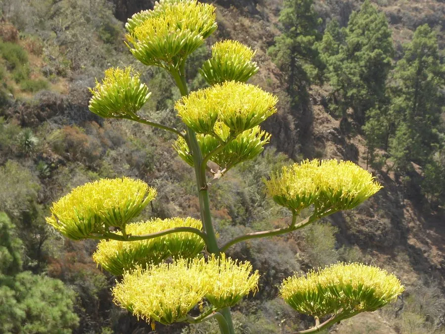

多肉植物 · 植物界
金边龙舌兰 Agave americana var. marginata

天门冬科龙舌兰属大型多肉，叶片灰绿色、边缘镶金黄条纹，形似巨型莲座，原产墨西哥，是常见的园林景观植物。
- 分类
- 门被子植物门纲单子叶植物纲目天门冬目科天门冬科属龙舌兰属
- 栖息环境
- 墨西哥干旱高原的石质坡地，喜光、耐旱
- 地理分布
- 原产墨西哥，中国南方及世界各地引种栽培
- 保护级别
- 暂无评估
物种志
金边龙舌兰为天门冬科龙舌兰属的多年生肉质草本，是龙舌兰的斑叶变种。叶片剑形，长 1–2 米，宽 15–20 厘米，肥厚坚硬，叶面灰绿色，两侧边缘有宽窄不等的金黄色纵条纹，叶缘生有褐色钩刺，顶端有一枚硬刺。叶片放射状排列成大型莲座，直径可达 2–3 米。花葶高可达 8 米，花黄绿色，开花后母株枯死；果实为蒴果。
金边龙舌兰原产墨西哥的干旱高原，喜阳光充足、温暖干燥和通风良好的环境，耐旱、耐瘠薄，不耐严寒。它株型巨大、叶色醒目，常作园林景观、道路绿化和盆栽观赏。栽培用排水良好的沙质土，生长期干透浇透，冬季保持 5℃ 以上；繁殖以分株为主，也可用花葶上的珠芽繁殖。
形态与习性
- 株高叶片长 1–2 米，莲座直径 2–3 米
- 叶片剑形，灰绿色，边缘金黄
- 花期花葶高可达 8 米，花黄绿色
- 光照极喜光，需全日照
- 水分耐旱，干透浇透
- 土壤排水良好的沙质土
- 繁殖分株、珠芽繁殖
- 主要用途园林景观、道路绿化
趣味知识
- 金边龙舌兰是龙舌兰的斑叶变种，叶缘的金黄条纹是它的标志。
- 龙舌兰开花要积攒多年养分，花后母株即枯死。
- 它的叶缘有褐色钩刺，园林修剪时应戴手套。